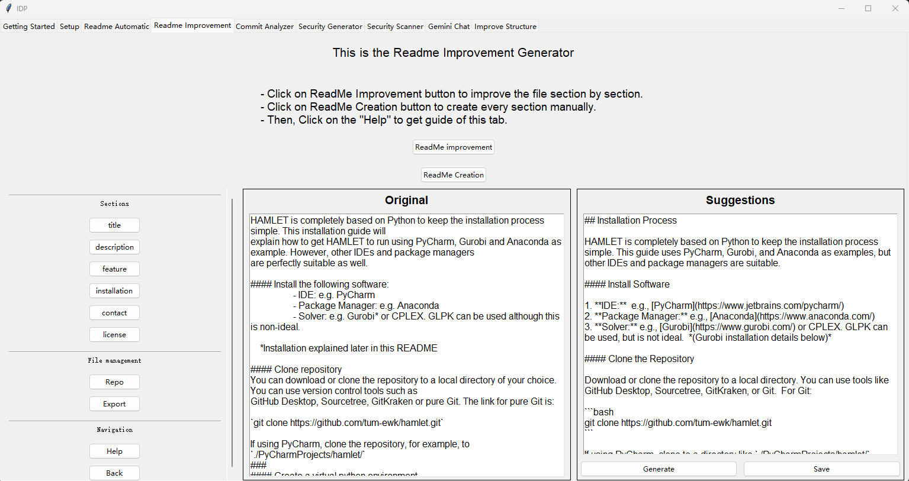

Readme Improvement
Introduction
This section introduces the Readme Improvement function Readme Improvement tab.
Middle Frame: Original Text
This frame displays the original text of the selected README section.
Right Frame: Suggestions
This frame displays the LLM-refined version of the README section.
You can edit the suggestion manually. Don’t worry about formatting—the Export function will let the LLM compile all refined sections into a well-formatted Markdown README.
Generate: Use the LLM to refine the selected section.
Save: Save the refined section if you are satisfied with the result.